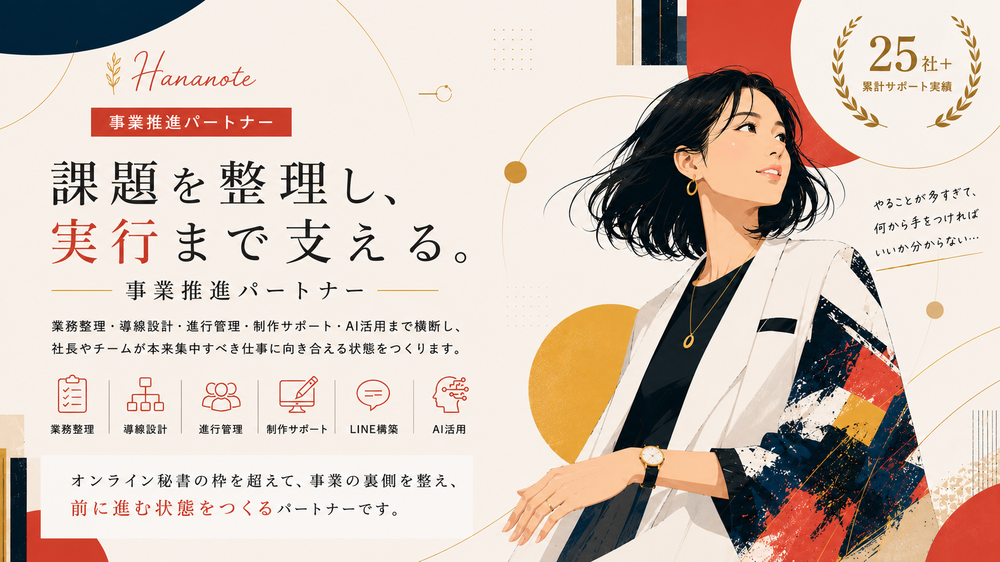

事業が伸びてくるほど、社長やチームの頭の中には、やるべきことがどんどん増えていきます。
でも、目の前の業務に追われていると、本当に進めたいことが後回しになってしまうことも少なくありません。
業務が増えすぎて、何から手をつければいいか分からない
社長の頭の中にある考えが、チームにうまく伝わっていない
制作物を作りたいけれど、依頼内容を整理する時間がない
LINEやLPなどの導線を整えたいが、設計から相談できる人がいない
外部パートナーとのやり取りや進行管理に時間がかかっている
新規事業やスクール事業を立ち上げたいが、準備することが多すぎる
AIを活用したいが、実務にどう落とし込めばいいか分からない
事務作業や確認業務に追われて、本来集中すべき仕事が進まない
こうした事業の裏側にある混乱を整理し、
必要なタスク・制作物・導線・業務フローを形にしていくサポートサービスです。
作業代行ではなく、事業が前に進む状態をつくるサポートです。
バックオフィス・業務整理・制作サポート・LINE構築・Web制作・進行管理・AI活用まで、横断してサポートしています。
ただ依頼された作業をこなすだけではなく、
「この業務は事業全体のどこにつながるのか」
「誰に、何を、どの順番で伝えるべきか」
「今、社長やチームが動きやすくなるために何を整えるべきか」
を考えながら、実務に落とし込んでいきます。
社長の頭の中にある考えを整理し、
チームや外部パートナーが動ける形にする。
それが、私の役割です。
作業を受けて動くだけのサービスとは異なります。「この業務は事業全体のどこにつながるのか」「今、何を優先すべきか」を考え、必要な実務まで落とし込む、上流から関われるのが強みです。
資料作成でも、ただ見た目を整えるのではなく、「誰に何を伝える資料なのか」「次の行動につなげるには何が必要か」まで考えて作成します。
業務整理、資料作成、LINE導線、WebサイトやLP整理まで、複数の担当者に説明する手間なく、まとめて相談できます。
「何を誰に依頼するか」から一緒に整理できるため、スピード感を持って事業を前に進められます。
事業が動き出すと、「意図が伝わらない」「誰が何をやるのか曖昧」「情報が散らばって進行が止まる」という状態が起こりやすくなります。
社長の意図を噛み砕き、担当者ごとのタスクを整理し、実装担当者が動きやすい形で情報を渡します。社長とチームの橋渡し役として機能します。
AIは使い方が成果を左右します。現場の業務や制作フローに合わせ、「どこにAIを組み込むと効率化できるか」を見極めて実装します。
Webサイト制作ではAI活用により制作時間を約1/2に短縮。事務系業務では約60％の業務削減を実現しています。
事業フェーズに合わせて、必要な役割を横断して担います。
上記以外にも、オンラインで対応できる業務であればご相談いただけます。
対応できる業務の詳細
数字で見える成果だけでなく、事業の成長フェーズや新しい取り組みの裏側を支えてきました。
拡大フェーズにある事業にて、広告チームの進行管理、販売店対応、販促物制作、外部パートナーとの連携整理を担当。
社長の頭の中にある考えや依頼内容を整理し、チームが動きやすい形に落とし込むことで、複数の業務が同時に進む状態をつくりました。
相談ハードルの高いサービスにおいて、ホームページ中心だった問い合わせ導線をLINEにも拡張。
ユーザーの心理に合わせたシナリオ設計や配信導線を整えることで、LINEから月10件ほど相談が入る状態を構築しました。
100年続く企業の新規スクール事業にて、講座設計、カリキュラム作成、コンテンツ制作、事業計画、HP改修、AI活用まで幅広くサポート。
アイデアを形にする段階から関わり、必要な情報を整理しながら、実際に運営できる状態へ落とし込んでいます。
見た目を整えるだけでなく、誰に何を伝えるための制作物なのかを考えながら作っています。
画像をクリックすると拡大表示できます。
ご相談内容や事業フェーズに合わせて、最適な形をご提案します。
まずは現在の状況をお聞きし、必要なサポート範囲や優先順位を一緒に整理します。
業務整理、優先順位整理、導線改善、AI活用、外注・チーム体制などについてご相談いただけます。
「何から整えればいいか分からない」という段階の方におすすめです。
バックオフィス、資料作成、制作サポート、LINE運用、各種事務サポートなど、日々の業務を必要な分だけサポートします。
日々の業務や制作物を、必要な分だけ依頼したい方におすすめです。
進行管理、チーム連携、外部パートナー調整、タスク整理、制作物の進行管理、業務フロー整理など、継続的に事業の裏側を整えます。
社長や事業責任者の右腕として動きたい方におすすめです。
LINE構築、シナリオ設計、相談導線設計、配信導線整理など、問い合わせや相談につながる流れを整えます。
問い合わせや相談につながる導線を整えたい方におすすめです。
見た目だけでなく、伝わる構成や導線まで整理しながら制作します。
構成から制作まで一貫して任せたい方におすすめです。
事務作業、情報整理、制作フローなどにAIを取り入れ、実務に合わせた効率化の仕組みを整えます。
AIを実務に取り入れ、業務時間を削減したい方におすすめです。
※内容や対応範囲により個別にお見積もりいたします。
「デザインに込められた想いや視点が、今まで出会ったどのデザイナーさんよりも魅力的で感動しました。ここまで考えてくれるなら安心して任せられると感じ、今後必要になるデザインはすべてお願いしたいと思っています。」
「幅広く対応していただけるので、色々なサポートをお願いしています。大まかな指示でも意図を汲み取ってくれますし、プロジェクト運営に関するクライアント対応もお任せしています。」
「いつも資料をわかりやすく整えてくださって助かっています。見た目が整うことで、クライアントにも伝わりやすくなり、非常にありがたいです。」
「複数の外部パートナーとのやり取りが複雑になっていたのですが、間に入って整理してもらえるようになってから、話が通りやすくなりました。請求書の作成まで任せられるようになって、すごく助かっています。仕事の姿勢もクオリティも高く、安心して任せられる方です。」
「こちらから渡せる情報は多くなかったのですが、その中から活動の内容をきちんと拾い上げて、関心につながる形にまとめてくださいました。ホームページだけだった相談導線がLINEにも広がり、今では月10件ほど相談が入っています。すごく信頼できる方です。」
「新規事業ですべてが手探りの状態から、カリキュラムも事業計画もHP改修も一緒に形にしてもらいました。サイトは『かっこよくなった』と社内の評判も良く、AIを実務に活かしている点も評価されています。実装担当者からも、必要な情報が分かりやすく整理されていると聞いています。」
※いただいたご感想をもとに構成しています。
立石 はなこ
新卒から約10年間、保育士として勤務。その後、節句人形の製造小売り店での商品開発・接客を経て、デザインを学びフリーランスとして独立しました。
現在は、制作やLINE構築、進行管理、事業設計など、事業全体を見ながら幅広くサポート。累計25社以上の企業・事業者に携わり、スクール事業のPMや新規事業の立ち上げにも関わっています。
大切にしているのは、ただ手を動かすことではなく、
事業が前に進む状態をつくることです。
お使いの環境に合わせて対応します。記載のないツールもご相談ください。
現在のお困りごとや、依頼したい内容をお聞かせください。内容が整理できていない段階でも大丈夫です。
今必要なサポート内容を整理し、どこから着手すると効果的かをご提案します。
ご依頼内容や稼働量に合わせて、時間制・月額制・案件単位など最適な形をご提案します。
サポート内容と条件をご確認いただいたうえで、業務委託契約書を締結します。ご希望に応じて秘密保持契約（NDA）の締結にも対応しています。
タスク整理、制作、進行管理、導線設計など、必要な実務を進めていきます。
進行状況を確認しながら、必要に応じて業務フローや導線を改善していきます。
一般的な事務作業だけでなく、業務整理、制作サポート、LINE導線設計、Web制作、進行管理、AI活用まで横断して対応できる点が特徴です。単に依頼された作業をこなすだけではなく、事業全体の流れを見ながら、社長やチームが動きやすい状態を整えます。
はい、大丈夫です。「業務が増えてきたけれど、何を任せればいいか分からない」という段階からご相談いただけます。現在の業務状況を整理し、優先度の高いところからサポート内容をご提案します。
はい、可能です。Web制作や事務作業、情報整理、制作フローの効率化など、実務に合わせたAI活用をサポートしています。実際にWeb制作では制作時間を約1/2に、事務系業務では約60％の削減にもつながっています。
はい、可能です。チラシ、パンフレット、バナー、LP、Webサイト、スライド資料などに対応しています。ただ見た目を整えるだけでなく、誰に何を伝えるための制作物なのかを考えながら作成します。
はい、可能です。月額制・時間制・案件単位など、ご依頼内容に合わせてご提案します。継続サポートでは、日々の業務整理、制作、進行管理、チーム連携まで幅広く対応できます。
普段のやり取りはチャットやLINE、メールなどで行います。必要に応じてオンラインミーティングを設定いたします。
業務上知り得た情報はすべて外部に漏らすことなく、守秘義務を遵守しております。ご希望があればNDA（秘密保持契約）を締結のうえ対応いたします。
やるべきことはある。でも、整理する時間がない。
誰に何を頼めばいいか分からない。
制作も進行管理も、まとめて見てくれる人がほしい。
そんな時は、お気軽にご相談ください。
今の業務状況や事業フェーズをお聞きし、必要なサポート内容を一緒に整理します。
「これも頼めるかな？」という段階でも大丈夫です。まずはお気軽にご相談ください。